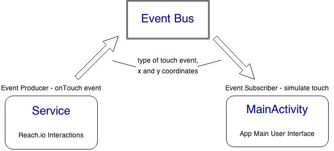

Reach.io
Extend the reach area of the thumb for one-handed mobile device touch interaction
Jinhyun Kim
Muzi Li
Updated 12/11/2014
Introduction
The average screen sizes of newly released smartphone devices is increasing every year. If you use your phone with only one hand, it is becoming more and more difficult to reach far corners of your phone touch screen.
Reach.io is an Android project demonstrating how to extend the reach area of the thumb for one-handed mobile touch interaction.
There are some similar works done to solve the same problems:
But we wanted to provide an alternative method to help users reach far corners (even in horizontal) without hiding other parts of a screen.
Here is a short overview video of Reach.io
Design

Implementation
Reach.io demo application is built for Android, compatible with API 15 (4.0.3 Ice Cream Sandwich) and above, on Android Studio with Gradle.
Architecture
Diagram below describes the basic architecture of the project.

The three indicators are added to WindowManager from GlobalTouchService.
The event bus forwards onTouch events from the service to the main activity to simulate the touch events accordingly.
Event Bus
Otto event bus from Square is used for the communication between a service and an activity.
Global Touch Service
GlobalTouchService code snippet is used as a starting point and our project-specific code was added to implement a control that can run outside the demo application context (display indicators while the demo app is put in background or killed).Calculating Selector Location
The selector location is determined by the following steps:
- Calculate a vector from the anchor point to the current touch location
- Multiply the calculated vector by the system defined (movement rate - 1)
- Add the above to the current touch location and display the selector at this location.
ex) movement rate = 2.0
The anchor point is at the bottom left
The touch location is at the center
Then, the selector will be placed at the top right